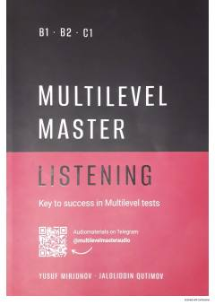

MMMultilevel imtihonlari uchun tinglab tushunish mashqlari javoblar to'plami.
Ushbu qo'llanma Multilevel imtihonlariga tayyorgarlik ko'rayotganlar uchun mo'ljallangan tinglab tushunish (listening) mashqlari javoblar kalitini o'z ichiga oladi. Kitob Yusuf Mirjonov va Jaloliddin Qutimov tomonidan tuzilgan bo'lib, o'quvchilarga o'z bilimlarini mustaqil tekshirish imkonini beradi.